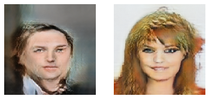
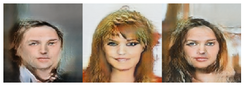

Face image generation with StyleGAN
Author: Soon-Yau Cheong
Date created: 2021/07/01
Last modified: 2021/12/20
Description: Implementation of StyleGAN for image generation.

Introduction
The key idea of StyleGAN is to progressively increase the resolution of the generated
images and to incorporate style features in the generative process.This
StyleGAN implementation is based on the book
Hands-on Image Generation with TensorFlow.
The code from the book's
GitHub repository
was refactored to leverage a custom train_step() to enable
faster training time via compilation and distribution.
Setup
Install latest TFA
pip install tensorflow_addons
import os
import numpy as np
import matplotlib.pyplot as plt
from functools import partial
import tensorflow as tf
from tensorflow import keras
from tensorflow.keras import layers
from tensorflow.keras.models import Sequential
from tensorflow_addons.layers import InstanceNormalization
import gdown
from zipfile import ZipFile
Prepare the dataset
In this example, we will train using the CelebA from TensorFlow Datasets.
def log2(x):
return int(np.log2(x))
# we use different batch size for different resolution, so larger image size
# could fit into GPU memory. The keys is image resolution in log2
batch_sizes = {2: 16, 3: 16, 4: 16, 5: 16, 6: 16, 7: 8, 8: 4, 9: 2, 10: 1}
# We adjust the train step accordingly
train_step_ratio = {k: batch_sizes[2] / v for k, v in batch_sizes.items()}
os.makedirs("celeba_gan")
url = "https://drive.google.com/uc?id=1O7m1010EJjLE5QxLZiM9Fpjs7Oj6e684"
output = "celeba_gan/data.zip"
gdown.download(url, output, quiet=True)
with ZipFile("celeba_gan/data.zip", "r") as zipobj:
zipobj.extractall("celeba_gan")
# Create a dataset from our folder, and rescale the images to the [0-1] range:
ds_train = keras.utils.image_dataset_from_directory(
"celeba_gan", label_mode=None, image_size=(64, 64), batch_size=32
)
def resize_image(res, image):
# only downsampling, so use nearest neighbor that is faster to run
image = tf.image.resize(
image, (res, res), method=tf.image.ResizeMethod.NEAREST_NEIGHBOR
)
image = tf.cast(image, tf.float32) / 127.5 - 1.0
return image
def create_dataloader(res):
batch_size = batch_sizes[log2(res)]
# NOTE: we unbatch the dataset so we can `batch()` it again with the `drop_remainder=True` option
# since the model only supports a single batch size
dl = ds_train.map(partial(resize_image, res), num_parallel_calls=tf.data.AUTOTUNE).unbatch()
dl = dl.shuffle(200).batch(batch_size, drop_remainder=True).prefetch(1).repeat()
return dl
Utility function to display images after each epoch
def plot_images(images, log2_res, fname=""):
scales = {2: 0.5, 3: 1, 4: 2, 5: 3, 6: 4, 7: 5, 8: 6, 9: 7, 10: 8}
scale = scales[log2_res]
grid_col = min(images.shape[0], int(32 // scale))
grid_row = 1
f, axarr = plt.subplots(
grid_row, grid_col, figsize=(grid_col * scale, grid_row * scale)
)
for row in range(grid_row):
ax = axarr if grid_row == 1 else axarr[row]
for col in range(grid_col):
ax[col].imshow(images[row * grid_col + col])
ax[col].axis("off")
plt.show()
if fname:
f.savefig(fname)
Custom Layers
The following are building blocks that will be used to construct the generators and discriminators of the StyleGAN model.
def fade_in(alpha, a, b):
return alpha * a + (1.0 - alpha) * b
def wasserstein_loss(y_true, y_pred):
return -tf.reduce_mean(y_true * y_pred)
def pixel_norm(x, epsilon=1e-8):
return x / tf.math.sqrt(tf.reduce_mean(x ** 2, axis=-1, keepdims=True) + epsilon)
def minibatch_std(input_tensor, epsilon=1e-8):
n, h, w, c = tf.shape(input_tensor)
group_size = tf.minimum(4, n)
x = tf.reshape(input_tensor, [group_size, -1, h, w, c])
group_mean, group_var = tf.nn.moments(x, axes=(0), keepdims=False)
group_std = tf.sqrt(group_var + epsilon)
avg_std = tf.reduce_mean(group_std, axis=[1, 2, 3], keepdims=True)
x = tf.tile(avg_std, [group_size, h, w, 1])
return tf.concat([input_tensor, x], axis=-1)
class EqualizedConv(layers.Layer):
def __init__(self, out_channels, kernel=3, gain=2, **kwargs):
super().__init__(**kwargs)
self.kernel = kernel
self.out_channels = out_channels
self.gain = gain
self.pad = kernel != 1
def build(self, input_shape):
self.in_channels = input_shape[-1]
initializer = keras.initializers.RandomNormal(mean=0.0, stddev=1.0)
self.w = self.add_weight(
shape=[self.kernel, self.kernel, self.in_channels, self.out_channels],
initializer=initializer,
trainable=True,
name="kernel",
)
self.b = self.add_weight(
shape=(self.out_channels,), initializer="zeros", trainable=True, name="bias"
)
fan_in = self.kernel * self.kernel * self.in_channels
self.scale = tf.sqrt(self.gain / fan_in)
def call(self, inputs):
if self.pad:
x = tf.pad(inputs, [[0, 0], [1, 1], [1, 1], [0, 0]], mode="REFLECT")
else:
x = inputs
output = (
tf.nn.conv2d(x, self.scale * self.w, strides=1, padding="VALID") + self.b
)
return output
class EqualizedDense(layers.Layer):
def __init__(self, units, gain=2, learning_rate_multiplier=1, **kwargs):
super().__init__(**kwargs)
self.units = units
self.gain = gain
self.learning_rate_multiplier = learning_rate_multiplier
def build(self, input_shape):
self.in_channels = input_shape[-1]
initializer = keras.initializers.RandomNormal(
mean=0.0, stddev=1.0 / self.learning_rate_multiplier
)
self.w = self.add_weight(
shape=[self.in_channels, self.units],
initializer=initializer,
trainable=True,
name="kernel",
)
self.b = self.add_weight(
shape=(self.units,), initializer="zeros", trainable=True, name="bias"
)
fan_in = self.in_channels
self.scale = tf.sqrt(self.gain / fan_in)
def call(self, inputs):
output = tf.add(tf.matmul(inputs, self.scale * self.w), self.b)
return output * self.learning_rate_multiplier
class AddNoise(layers.Layer):
def build(self, input_shape):
n, h, w, c = input_shape[0]
initializer = keras.initializers.RandomNormal(mean=0.0, stddev=1.0)
self.b = self.add_weight(
shape=[1, 1, 1, c], initializer=initializer, trainable=True, name="kernel"
)
def call(self, inputs):
x, noise = inputs
output = x + self.b * noise
return output
class AdaIN(layers.Layer):
def __init__(self, gain=1, **kwargs):
super().__init__(**kwargs)
self.gain = gain
def build(self, input_shapes):
x_shape = input_shapes[0]
w_shape = input_shapes[1]
self.w_channels = w_shape[-1]
self.x_channels = x_shape[-1]
self.dense_1 = EqualizedDense(self.x_channels, gain=1)
self.dense_2 = EqualizedDense(self.x_channels, gain=1)
def call(self, inputs):
x, w = inputs
ys = tf.reshape(self.dense_1(w), (-1, 1, 1, self.x_channels))
yb = tf.reshape(self.dense_2(w), (-1, 1, 1, self.x_channels))
return ys * x + yb
Next we build the following:
- A model mapping to map the random noise into style code
- The generator
- The discriminator
For the generator, we build generator blocks at multiple resolutions, e.g. 4x4, 8x8, ...up to 1024x1024. We only use 4x4 in the beginning and we use progressively larger-resolution blocks as the training proceeds. Same for the discriminator.
def Mapping(num_stages, input_shape=512):
z = layers.Input(shape=(input_shape))
w = pixel_norm(z)
for i in range(8):
w = EqualizedDense(512, learning_rate_multiplier=0.01)(w)
w = layers.LeakyReLU(0.2)(w)
w = tf.tile(tf.expand_dims(w, 1), (1, num_stages, 1))
return keras.Model(z, w, name="mapping")
class Generator:
def __init__(self, start_res_log2, target_res_log2):
self.start_res_log2 = start_res_log2
self.target_res_log2 = target_res_log2
self.num_stages = target_res_log2 - start_res_log2 + 1
# list of generator blocks at increasing resolution
self.g_blocks = []
# list of layers to convert g_block activation to RGB
self.to_rgb = []
# list of noise input of different resolutions into g_blocks
self.noise_inputs = []
# filter size to use at each stage, keys are log2(resolution)
self.filter_nums = {
0: 512,
1: 512,
2: 512, # 4x4
3: 512, # 8x8
4: 512, # 16x16
5: 512, # 32x32
6: 256, # 64x64
7: 128, # 128x128
8: 64, # 256x256
9: 32, # 512x512
10: 16,
} # 1024x1024
start_res = 2 ** start_res_log2
self.input_shape = (start_res, start_res, self.filter_nums[start_res_log2])
self.g_input = layers.Input(self.input_shape, name="generator_input")
for i in range(start_res_log2, target_res_log2 + 1):
filter_num = self.filter_nums[i]
res = 2 ** i
self.noise_inputs.append(
layers.Input(shape=(res, res, 1), name=f"noise_{res}x{res}")
)
to_rgb = Sequential(
[
layers.InputLayer(input_shape=(res, res, filter_num)),
EqualizedConv(3, 1, gain=1),
],
name=f"to_rgb_{res}x{res}",
)
self.to_rgb.append(to_rgb)
is_base = i == self.start_res_log2
if is_base:
input_shape = (res, res, self.filter_nums[i - 1])
else:
input_shape = (2 ** (i - 1), 2 ** (i - 1), self.filter_nums[i - 1])
g_block = self.build_block(
filter_num, res=res, input_shape=input_shape, is_base=is_base
)
self.g_blocks.append(g_block)
def build_block(self, filter_num, res, input_shape, is_base):
input_tensor = layers.Input(shape=input_shape, name=f"g_{res}")
noise = layers.Input(shape=(res, res, 1), name=f"noise_{res}")
w = layers.Input(shape=512)
x = input_tensor
if not is_base:
x = layers.UpSampling2D((2, 2))(x)
x = EqualizedConv(filter_num, 3)(x)
x = AddNoise()([x, noise])
x = layers.LeakyReLU(0.2)(x)
x = InstanceNormalization()(x)
x = AdaIN()([x, w])
x = EqualizedConv(filter_num, 3)(x)
x = AddNoise()([x, noise])
x = layers.LeakyReLU(0.2)(x)
x = InstanceNormalization()(x)
x = AdaIN()([x, w])
return keras.Model([input_tensor, w, noise], x, name=f"genblock_{res}x{res}")
def grow(self, res_log2):
res = 2 ** res_log2
num_stages = res_log2 - self.start_res_log2 + 1
w = layers.Input(shape=(self.num_stages, 512), name="w")
alpha = layers.Input(shape=(1), name="g_alpha")
x = self.g_blocks[0]([self.g_input, w[:, 0], self.noise_inputs[0]])
if num_stages == 1:
rgb = self.to_rgb[0](x)
else:
for i in range(1, num_stages - 1):
x = self.g_blocks[i]([x, w[:, i], self.noise_inputs[i]])
old_rgb = self.to_rgb[num_stages - 2](x)
old_rgb = layers.UpSampling2D((2, 2))(old_rgb)
i = num_stages - 1
x = self.g_blocks[i]([x, w[:, i], self.noise_inputs[i]])
new_rgb = self.to_rgb[i](x)
rgb = fade_in(alpha[0], new_rgb, old_rgb)
return keras.Model(
[self.g_input, w, self.noise_inputs, alpha],
rgb,
name=f"generator_{res}_x_{res}",
)
class Discriminator:
def __init__(self, start_res_log2, target_res_log2):
self.start_res_log2 = start_res_log2
self.target_res_log2 = target_res_log2
self.num_stages = target_res_log2 - start_res_log2 + 1
# filter size to use at each stage, keys are log2(resolution)
self.filter_nums = {
0: 512,
1: 512,
2: 512, # 4x4
3: 512, # 8x8
4: 512, # 16x16
5: 512, # 32x32
6: 256, # 64x64
7: 128, # 128x128
8: 64, # 256x256
9: 32, # 512x512
10: 16,
} # 1024x1024
# list of discriminator blocks at increasing resolution
self.d_blocks = []
# list of layers to convert RGB into activation for d_blocks inputs
self.from_rgb = []
for res_log2 in range(self.start_res_log2, self.target_res_log2 + 1):
res = 2 ** res_log2
filter_num = self.filter_nums[res_log2]
from_rgb = Sequential(
[
layers.InputLayer(
input_shape=(res, res, 3), name=f"from_rgb_input_{res}"
),
EqualizedConv(filter_num, 1),
layers.LeakyReLU(0.2),
],
name=f"from_rgb_{res}",
)
self.from_rgb.append(from_rgb)
input_shape = (res, res, filter_num)
if len(self.d_blocks) == 0:
d_block = self.build_base(filter_num, res)
else:
d_block = self.build_block(
filter_num, self.filter_nums[res_log2 - 1], res
)
self.d_blocks.append(d_block)
def build_base(self, filter_num, res):
input_tensor = layers.Input(shape=(res, res, filter_num), name=f"d_{res}")
x = minibatch_std(input_tensor)
x = EqualizedConv(filter_num, 3)(x)
x = layers.LeakyReLU(0.2)(x)
x = layers.Flatten()(x)
x = EqualizedDense(filter_num)(x)
x = layers.LeakyReLU(0.2)(x)
x = EqualizedDense(1)(x)
return keras.Model(input_tensor, x, name=f"d_{res}")
def build_block(self, filter_num_1, filter_num_2, res):
input_tensor = layers.Input(shape=(res, res, filter_num_1), name=f"d_{res}")
x = EqualizedConv(filter_num_1, 3)(input_tensor)
x = layers.LeakyReLU(0.2)(x)
x = EqualizedConv(filter_num_2)(x)
x = layers.LeakyReLU(0.2)(x)
x = layers.AveragePooling2D((2, 2))(x)
return keras.Model(input_tensor, x, name=f"d_{res}")
def grow(self, res_log2):
res = 2 ** res_log2
idx = res_log2 - self.start_res_log2
alpha = layers.Input(shape=(1), name="d_alpha")
input_image = layers.Input(shape=(res, res, 3), name="input_image")
x = self.from_rgb[idx](input_image)
x = self.d_blocks[idx](x)
if idx > 0:
idx -= 1
downsized_image = layers.AveragePooling2D((2, 2))(input_image)
y = self.from_rgb[idx](downsized_image)
x = fade_in(alpha[0], x, y)
for i in range(idx, -1, -1):
x = self.d_blocks[i](x)
return keras.Model([input_image, alpha], x, name=f"discriminator_{res}_x_{res}")
Build StyleGAN with custom train step
class StyleGAN(tf.keras.Model):
def __init__(self, z_dim=512, target_res=64, start_res=4):
super().__init__()
self.z_dim = z_dim
self.target_res_log2 = log2(target_res)
self.start_res_log2 = log2(start_res)
self.current_res_log2 = self.target_res_log2
self.num_stages = self.target_res_log2 - self.start_res_log2 + 1
self.alpha = tf.Variable(1.0, dtype=tf.float32, trainable=False, name="alpha")
self.mapping = Mapping(num_stages=self.num_stages)
self.d_builder = Discriminator(self.start_res_log2, self.target_res_log2)
self.g_builder = Generator(self.start_res_log2, self.target_res_log2)
self.g_input_shape = self.g_builder.input_shape
self.phase = None
self.train_step_counter = tf.Variable(0, dtype=tf.int32, trainable=False)
self.loss_weights = {"gradient_penalty": 10, "drift": 0.001}
def grow_model(self, res):
tf.keras.backend.clear_session()
res_log2 = log2(res)
self.generator = self.g_builder.grow(res_log2)
self.discriminator = self.d_builder.grow(res_log2)
self.current_res_log2 = res_log2
print(f"\nModel resolution:{res}x{res}")
def compile(
self, steps_per_epoch, phase, res, d_optimizer, g_optimizer, *args, **kwargs
):
self.loss_weights = kwargs.pop("loss_weights", self.loss_weights)
self.steps_per_epoch = steps_per_epoch
if res != 2 ** self.current_res_log2:
self.grow_model(res)
self.d_optimizer = d_optimizer
self.g_optimizer = g_optimizer
self.train_step_counter.assign(0)
self.phase = phase
self.d_loss_metric = keras.metrics.Mean(name="d_loss")
self.g_loss_metric = keras.metrics.Mean(name="g_loss")
super().compile(*args, **kwargs)
@property
def metrics(self):
return [self.d_loss_metric, self.g_loss_metric]
def generate_noise(self, batch_size):
noise = [
tf.random.normal((batch_size, 2 ** res, 2 ** res, 1))
for res in range(self.start_res_log2, self.target_res_log2 + 1)
]
return noise
def gradient_loss(self, grad):
loss = tf.square(grad)
loss = tf.reduce_sum(loss, axis=tf.range(1, tf.size(tf.shape(loss))))
loss = tf.sqrt(loss)
loss = tf.reduce_mean(tf.square(loss - 1))
return loss
def train_step(self, real_images):
self.train_step_counter.assign_add(1)
if self.phase == "TRANSITION":
self.alpha.assign(
tf.cast(self.train_step_counter / self.steps_per_epoch, tf.float32)
)
elif self.phase == "STABLE":
self.alpha.assign(1.0)
else:
raise NotImplementedError
alpha = tf.expand_dims(self.alpha, 0)
batch_size = tf.shape(real_images)[0]
real_labels = tf.ones(batch_size)
fake_labels = -tf.ones(batch_size)
z = tf.random.normal((batch_size, self.z_dim))
const_input = tf.ones(tuple([batch_size] + list(self.g_input_shape)))
noise = self.generate_noise(batch_size)
# generator
with tf.GradientTape() as g_tape:
w = self.mapping(z)
fake_images = self.generator([const_input, w, noise, alpha])
pred_fake = self.discriminator([fake_images, alpha])
g_loss = wasserstein_loss(real_labels, pred_fake)
trainable_weights = (
self.mapping.trainable_weights + self.generator.trainable_weights
)
gradients = g_tape.gradient(g_loss, trainable_weights)
self.g_optimizer.apply_gradients(zip(gradients, trainable_weights))
# discriminator
with tf.GradientTape() as gradient_tape, tf.GradientTape() as total_tape:
# forward pass
pred_fake = self.discriminator([fake_images, alpha])
pred_real = self.discriminator([real_images, alpha])
epsilon = tf.random.uniform((batch_size, 1, 1, 1))
interpolates = epsilon * real_images + (1 - epsilon) * fake_images
gradient_tape.watch(interpolates)
pred_fake_grad = self.discriminator([interpolates, alpha])
# calculate losses
loss_fake = wasserstein_loss(fake_labels, pred_fake)
loss_real = wasserstein_loss(real_labels, pred_real)
loss_fake_grad = wasserstein_loss(fake_labels, pred_fake_grad)
# gradient penalty
gradients_fake = gradient_tape.gradient(loss_fake_grad, [interpolates])
gradient_penalty = self.loss_weights[
"gradient_penalty"
] * self.gradient_loss(gradients_fake)
# drift loss
all_pred = tf.concat([pred_fake, pred_real], axis=0)
drift_loss = self.loss_weights["drift"] * tf.reduce_mean(all_pred ** 2)
d_loss = loss_fake + loss_real + gradient_penalty + drift_loss
gradients = total_tape.gradient(
d_loss, self.discriminator.trainable_weights
)
self.d_optimizer.apply_gradients(
zip(gradients, self.discriminator.trainable_weights)
)
# Update metrics
self.d_loss_metric.update_state(d_loss)
self.g_loss_metric.update_state(g_loss)
return {
"d_loss": self.d_loss_metric.result(),
"g_loss": self.g_loss_metric.result(),
}
def call(self, inputs: dict()):
style_code = inputs.get("style_code", None)
z = inputs.get("z", None)
noise = inputs.get("noise", None)
batch_size = inputs.get("batch_size", 1)
alpha = inputs.get("alpha", 1.0)
alpha = tf.expand_dims(alpha, 0)
if style_code is None:
if z is None:
z = tf.random.normal((batch_size, self.z_dim))
style_code = self.mapping(z)
if noise is None:
noise = self.generate_noise(batch_size)
# self.alpha.assign(alpha)
const_input = tf.ones(tuple([batch_size] + list(self.g_input_shape)))
images = self.generator([const_input, style_code, noise, alpha])
images = np.clip((images * 0.5 + 0.5) * 255, 0, 255).astype(np.uint8)
return images
Training
We first build the StyleGAN at smallest resolution, such as 4x4 or 8x8. Then we progressively grow the model to higher resolution by appending new generator and discriminator blocks.
START_RES = 4
TARGET_RES = 128
style_gan = StyleGAN(start_res=START_RES, target_res=TARGET_RES)
The training for each new resolution happens in two phases - "transition" and "stable".
In the transition phase, the features from the previous resolution are mixed with the
current resolution. This allows for a smoother transition when scaling up. We use each
epoch in model.fit() as a phase.
def train(
start_res=START_RES,
target_res=TARGET_RES,
steps_per_epoch=5000,
display_images=True,
):
opt_cfg = {"learning_rate": 1e-3, "beta_1": 0.0, "beta_2": 0.99, "epsilon": 1e-8}
val_batch_size = 16
val_z = tf.random.normal((val_batch_size, style_gan.z_dim))
val_noise = style_gan.generate_noise(val_batch_size)
start_res_log2 = int(np.log2(start_res))
target_res_log2 = int(np.log2(target_res))
for res_log2 in range(start_res_log2, target_res_log2 + 1):
res = 2 ** res_log2
for phase in ["TRANSITION", "STABLE"]:
if res == start_res and phase == "TRANSITION":
continue
train_dl = create_dataloader(res)
steps = int(train_step_ratio[res_log2] * steps_per_epoch)
style_gan.compile(
d_optimizer=tf.keras.optimizers.legacy.Adam(**opt_cfg),
g_optimizer=tf.keras.optimizers.legacy.Adam(**opt_cfg),
loss_weights={"gradient_penalty": 10, "drift": 0.001},
steps_per_epoch=steps,
res=res,
phase=phase,
run_eagerly=False,
)
prefix = f"res_{res}x{res}_{style_gan.phase}"
ckpt_cb = keras.callbacks.ModelCheckpoint(
f"checkpoints/stylegan_{res}x{res}.ckpt",
save_weights_only=True,
verbose=0,
)
print(phase)
style_gan.fit(
train_dl, epochs=1, steps_per_epoch=steps, callbacks=[ckpt_cb]
)
if display_images:
images = style_gan({"z": val_z, "noise": val_noise, "alpha": 1.0})
plot_images(images, res_log2)
StyleGAN can take a long time to train, in the code below, a small steps_per_epoch
value of 1 is used to sanity-check the code is working alright. In practice, a larger
steps_per_epoch value (over 10000)
is required to get decent results.
train(start_res=4, target_res=16, steps_per_epoch=1, display_images=False)
Model resolution:4x4
STABLE
1/1 [==============================] - 3s 3s/step - d_loss: 2.0971 - g_loss: 2.5965
Model resolution:8x8
TRANSITION
1/1 [==============================] - 5s 5s/step - d_loss: 6.6954 - g_loss: 0.3432
STABLE
1/1 [==============================] - 4s 4s/step - d_loss: 3.3558 - g_loss: 3.7813
Model resolution:16x16
TRANSITION
1/1 [==============================] - 10s 10s/step - d_loss: 3.3166 - g_loss: 6.6047
STABLE
WARNING:tensorflow:5 out of the last 5 calls to <function Model.make_train_function.<locals>.train_function at 0x7f7f0e7005e0> triggered tf.function retracing. Tracing is expensive and the excessive number of tracings could be due to (1) creating @tf.function repeatedly in a loop, (2) passing tensors with different shapes, (3) passing Python objects instead of tensors. For (1), please define your @tf.function outside of the loop. For (2), @tf.function has experimental_relax_shapes=True option that relaxes argument shapes that can avoid unnecessary retracing. For (3), please refer to https://www.tensorflow.org/guide/function#controlling_retracing and https://www.tensorflow.org/api_docs/python/tf/function for more details.
WARNING:tensorflow:5 out of the last 5 calls to <function Model.make_train_function.<locals>.train_function at 0x7f7f0e7005e0> triggered tf.function retracing. Tracing is expensive and the excessive number of tracings could be due to (1) creating @tf.function repeatedly in a loop, (2) passing tensors with different shapes, (3) passing Python objects instead of tensors. For (1), please define your @tf.function outside of the loop. For (2), @tf.function has experimental_relax_shapes=True option that relaxes argument shapes that can avoid unnecessary retracing. For (3), please refer to https://www.tensorflow.org/guide/function#controlling_retracing and https://www.tensorflow.org/api_docs/python/tf/function for more details.
1/1 [==============================] - 8s 8s/step - d_loss: -6.1128 - g_loss: 17.0095
Results
We can now run some inference using pre-trained 64x64 checkpoints. In general, the image fidelity increases with the resolution. You can try to train this StyleGAN to resolutions above 128x128 with the CelebA HQ dataset.
url = "https://github.com/soon-yau/stylegan_keras/releases/download/keras_example_v1.0/stylegan_128x128.ckpt.zip"
weights_path = keras.utils.get_file(
"stylegan_128x128.ckpt.zip",
url,
extract=True,
cache_dir=os.path.abspath("."),
cache_subdir="pretrained",
)
style_gan.grow_model(128)
style_gan.load_weights(os.path.join("pretrained/stylegan_128x128.ckpt"))
tf.random.set_seed(196)
batch_size = 2
z = tf.random.normal((batch_size, style_gan.z_dim))
w = style_gan.mapping(z)
noise = style_gan.generate_noise(batch_size=batch_size)
images = style_gan({"style_code": w, "noise": noise, "alpha": 1.0})
plot_images(images, 5)
Downloading data from https://github.com/soon-yau/stylegan_keras/releases/download/keras_example_v1.0/stylegan_128x128.ckpt.zip
540540928/540534982 [==============================] - 30s 0us/step

Style Mixing
We can also mix styles from two images to create a new image.
alpha = 0.4
w_mix = np.expand_dims(alpha * w[0] + (1 - alpha) * w[1], 0)
noise_a = [np.expand_dims(n[0], 0) for n in noise]
mix_images = style_gan({"style_code": w_mix, "noise": noise_a})
image_row = np.hstack([images[0], images[1], mix_images[0]])
plt.figure(figsize=(9, 3))
plt.imshow(image_row)
plt.axis("off")
(-0.5, 383.5, 127.5, -0.5)
